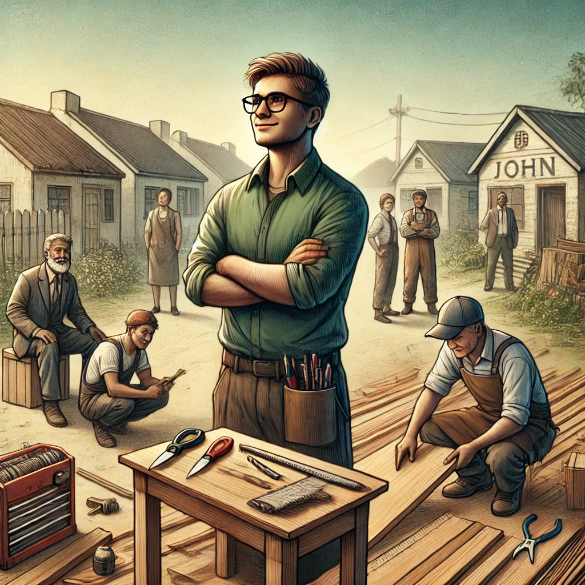

John's Journey
John was once trapped in the cycle of poverty, struggling to make ends meet. Living in a small, impoverished community, he faced numerous challenges—lack of access to education, limited job opportunities, and a harsh environment. However, everything changed when he was introduced to a local community program focused on education and skill development.
Through this program, John was able to gain essential skills in carpentry and business management. He also received mentorship from individuals who had successfully turned their lives around. With newfound confidence and training, John started his own carpentry business. His business grew steadily, and he was able to employ others in his community, providing jobs and stability. John’s success story is a testament to the transformative power of education and support in breaking the cycle of poverty.
